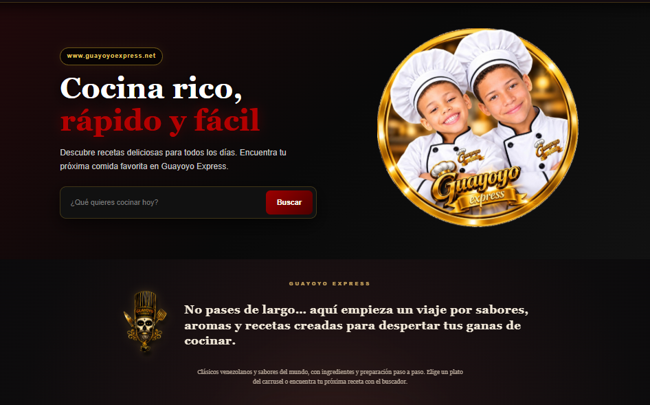
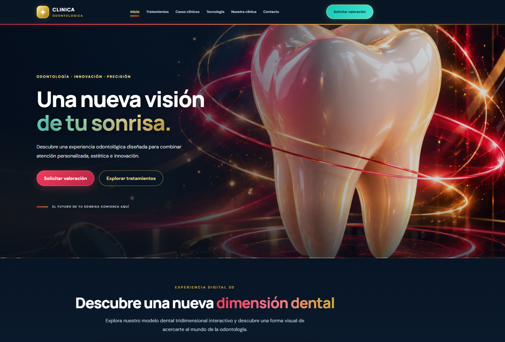
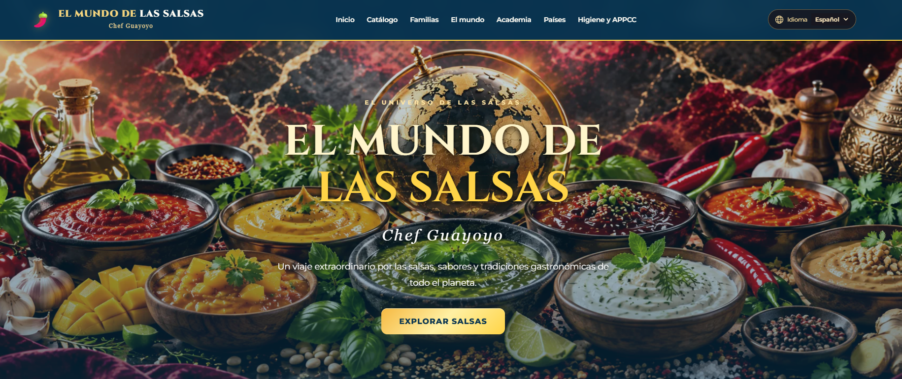
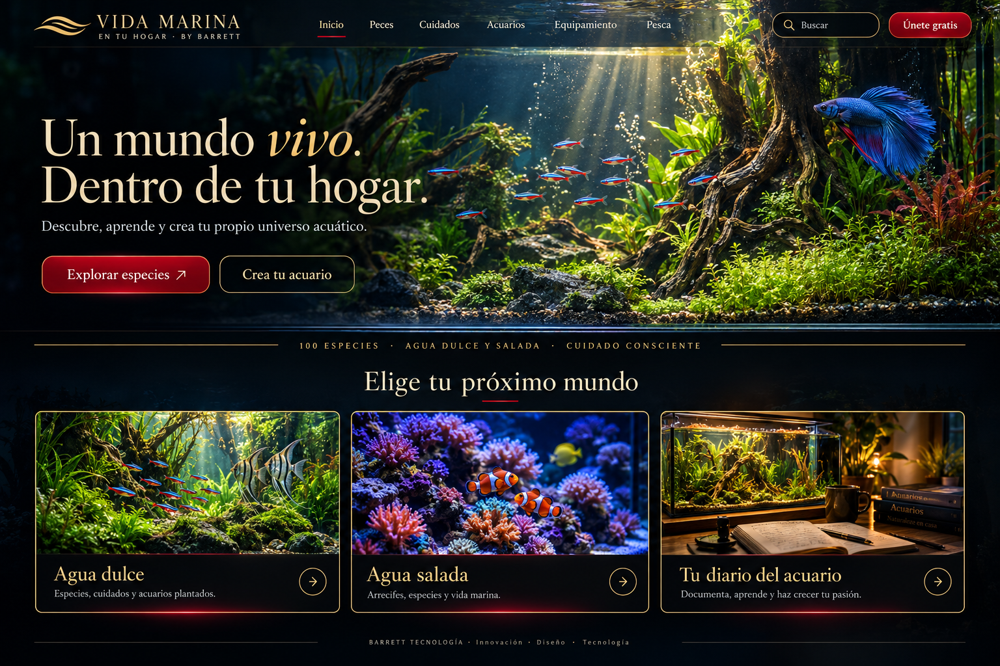
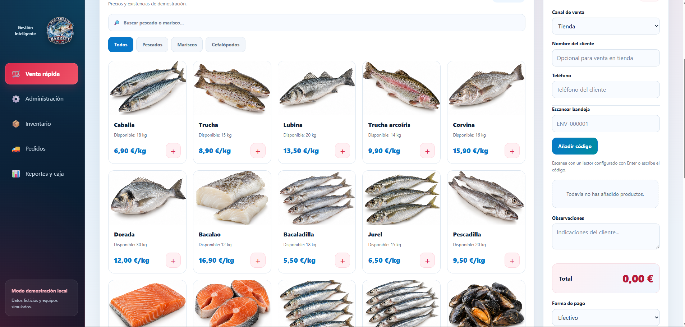
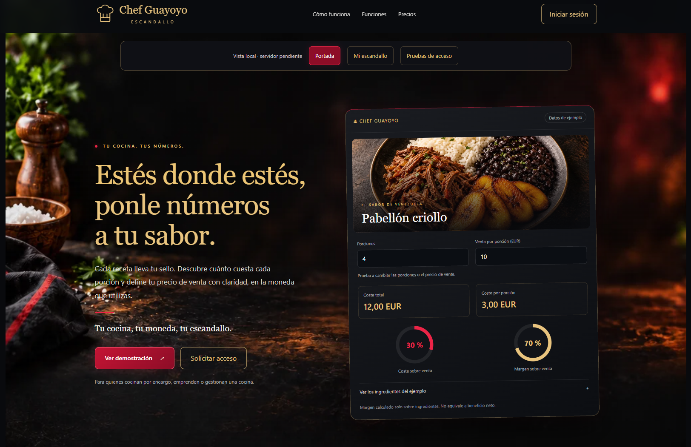
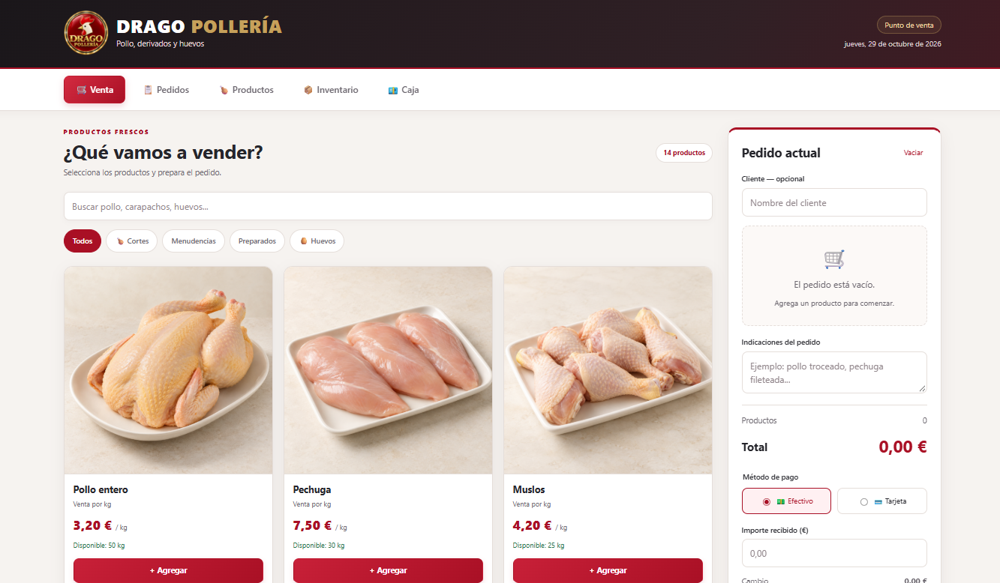
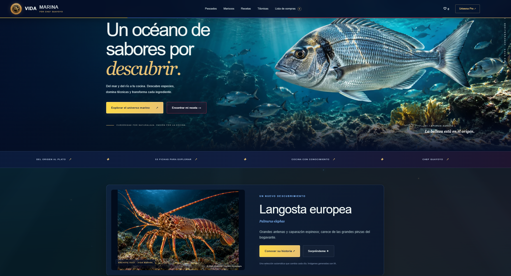
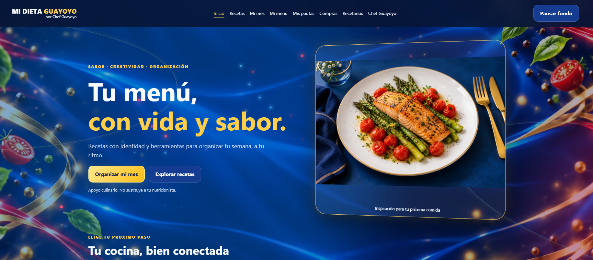

Guayoyo Express
Plataforma de recetas y propuestas gastronómicas para descubrir qué cocinar.
BARRETT TECNOLOGÍA
Nuestro universo de proyectos y soluciones digitales
Innovación, desarrollo y soluciones digitales.

Plataforma de recetas y propuestas gastronómicas para descubrir qué cocinar.

Experiencia digital de odontología con presentación visual 3D, tratamientos e información de la clínica.

Un recorrido digital por las salsas, sabores y tradiciones gastronómicas de diferentes países.

Un universo digital dedicado a los acuarios, las especies de agua dulce y salada, y el cuidado de la vida acuática.

Aplicación de gestión comercial para pescadería, con catálogo de productos, venta rápida, inventario, pedidos y reportes.

Herramienta gastronómica para calcular costes de recetas, precios por porción y márgenes de venta.
Proyecto de BARRETT TECNOLOGÍA.

Sistema de punto de venta para pollería, con catálogo de productos, gestión de pedidos, inventario y caja.
Proyecto de BARRETT TECNOLOGÍA.

Un universo gastronómico dedicado a los pescados y mariscos, con especies, recetas y técnicas de cocina.

Plataforma gastronómica para explorar recetas, organizar menús semanales y preparar listas de compras.